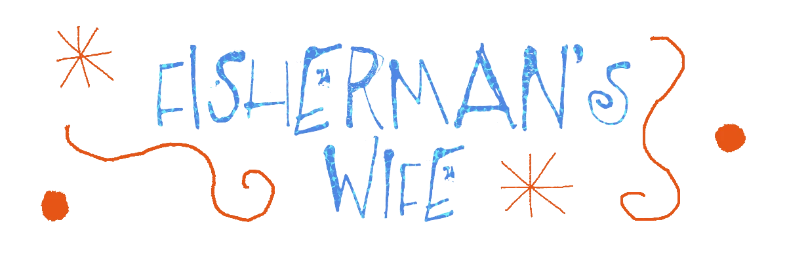
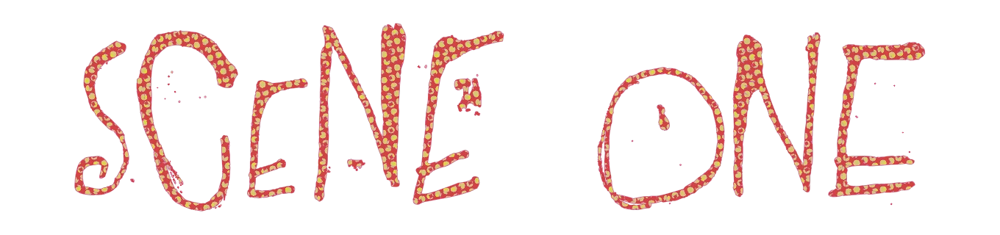
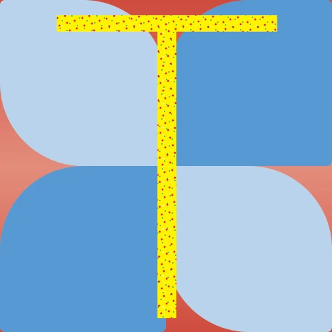
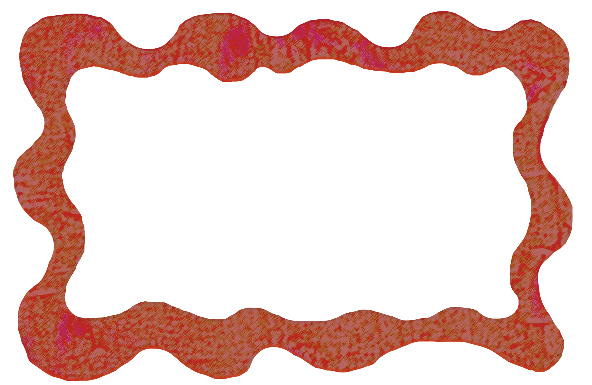
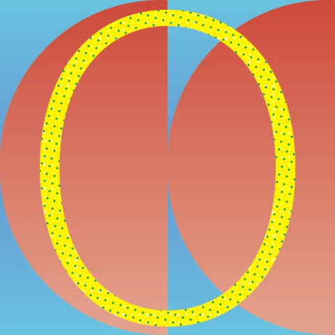
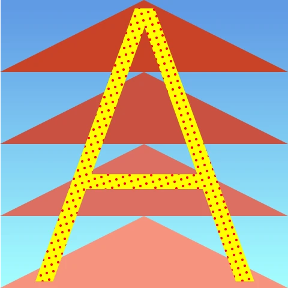
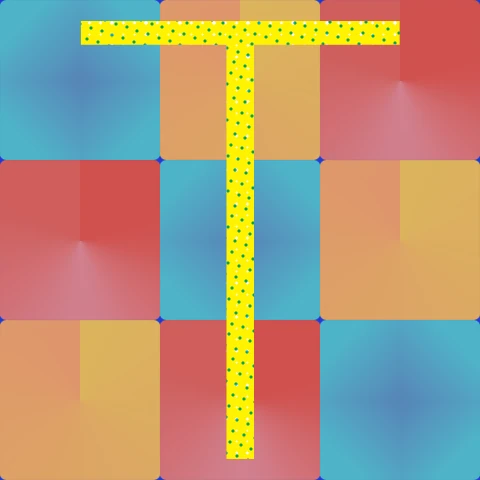

Fisherman's Wife



he fisherman’s wife eagerly chopped away at the vegetables, in anticipation of the special dinner. She was preparing piscine stew, a recipe handed down by her great-grandmother, to her grandmother, to her aunt, to her mother, and at last, to her.The final ingredient would be delivered by her partner: seven whimpering fishes.


nce the boats returned to harbor, and the heels of the fishermen’s boots banged against the wooden dock, the kitchen door flung open.The fisherman’s wife turned to greet her husband.
After a long day, all the fisherman could collect was one measly fish.

stounded, she fled. The fisherman searched the village until his stomach began to growl. He drove down the unlit road. Every restaurant had closed at sunset.At the end of the expressway, one storefront lit up for vegetarian burgers.

he burger’s panache finally satiated the fisherman’s hunger. Lucid again, he drove on. The expressway thinned until the gravel gave way to sand, the white lines of the road dissolving into fluid beige.The fisherman was determined to return to the cottage with his long-lost wife.
At least he had the companionship of his fish and its fries.